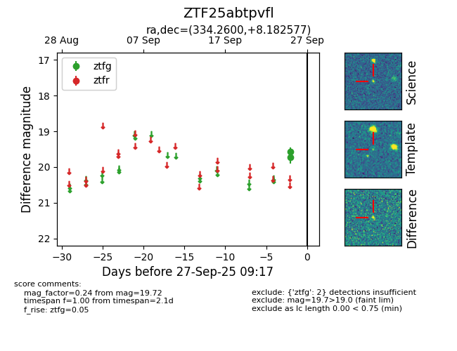

FINK: ZTF25abtpvfl
Lasair: ZTF25abtpvfl
ALeRCE: ZTF25abtpvfl
ZTF25abtpvfl (ztf,fink)
equatorial (ra, dec) = (334.2600,+8.18258)
galactic (l, b) = (70.7555,-38.57720)

last ztfg=19.72
2 ztfg detections